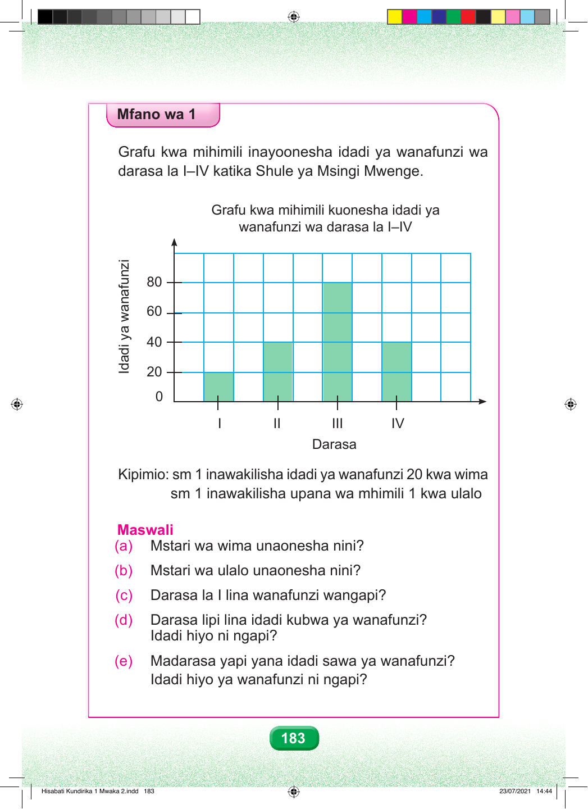

Mfano wa 1 Grafu kwa mihimili inayoonesha idadi ya wanafunzi wa darasa la I–IV katika Shule ya Msingi Mwenge. Grafu kwa mihimili kuonesha idadi ya wanafunzi wa darasa la I–IV 20 0 I II III Darasa Kipimio: sm 1 inawakilisha idadi ya wanafunzi 20 kwa wima sm 1 inawakilisha upana wa mhimili 1 kwa ulalo Maswali (a) Mstari wa wima unaonesha nini? (b) Mstari wa ulalo unaonesha nini? (c) Darasa la I lina wanafunzi wangapi? (d) Darasa lipi lina idadi kubwa ya wanafunzi? Idadi hiyo ni ngapi? (e) Madarasa yapi yana idadi sawa ya wanafunzi? Idadi hiyo ya wanafunzi ni ngapi? 183 iznufanaw ay idadI 80 60 40 IV Hisabati Kundirika 1 Mwaka 2.indd 183 23/07/2021 14:44